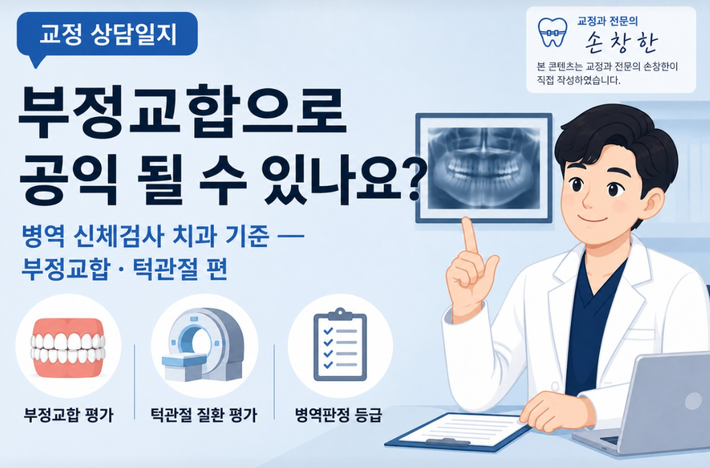

안녕하세요 교정과 전문의 손창한입니다 :)
긴 연휴에 박사학위 논문 작성까지 바쁜 시간들을 보내다보니 오랜만에 글을 작성하는 것 같네요.
얼마 전 20대 남성 환자분과 보호자분께서 내원하셨습니다.
"부정교합이 있고 식사를 하기 힘들어 합니다. 이 정도 부정교합이면 공익 판정을 받을 수 있을까요?"
자주 상담하는 주제는 아니지만 20대 남성분들 혹은 보호자분들이라면 궁금해하실 것 같습니다.
그래서 오늘은 병역 신체검사에서 치과 — 그 중에서도 부정교합, 턱관절질환, 그리고 저작기능이 어떻게 평가되는지 정리하고자 합니다.
근거는 국방부령 「병역판정 신체검사 등 검사규칙」 별표 3(질병·심신장애의 정도 및 평가기준)입니다. 제가 직접 원문을 확인하고 정리했습니다.

별표 3의 408호 부정교합 항목을 보면 아래와 같이 구분됩니다.
| 등급 | 해당 상태 | 병역처분 |
|---|---|---|
| 1급 | 절단교합, 교두폭 이하 반대교합, 견치~견치 이하 개교합 | 현역 |
| 2급 | 전치부 반대교합, 교두폭 이상 반대교합, 소구치 이상 개교합 | 현역 |
| 4급 | 양측성 최후방 대구치만 교합되는 경우, 또는 편측성으로 두 개 이하의 대구치만 교합되는 경우 | 보충역 (공익) |
| 5급 | 고도의 부정교합 + 심한 안모비대칭 + 중등도 이상 악관절장애 동반 | 전시근로역 |
4급(보충역) 기준이 상당히 높습니다.
"양측성 최후방 대구치만 교합"이란 앞니, 송곳니, 작은어금니가 전혀 닿지 않고 맨 뒤 어금니만 닿는 극단적인 개교합을 말합니다.
임상에서도 보기 드문 케이스입니다.
많은 분들이 궁금해하시는 돌출입, 주걱턱, 덧니, 일반적인 반대교합은 대부분 1-2급, 즉 현역 판정입니다. 단순 부정교합만으로 보충역을 기대하기는 현실적으로 어렵습니다.
별표 3의 399호 턱관절장애 항목의 기준을 살펴보겠습니다. 핵심 기준은 개구량(입이 벌어지는 정도)입니다.
| 개구량 | 상태 및 조건 | 등급 |
|---|---|---|
| 25mm 이상 ~ 35mm 미만 | 개구 제한이 있는 경우 | 2급 (현역) |
| 15mm 이상 ~ 25mm 미만 | 항재성 — MRI 등으로 악관절내장증 또는 섬유성강직이 확인된 경우 | 4급 (보충역) |
| 15mm 미만 | 악관절내장증 또는 섬유성강직이 확인된 경우 | 5급 |
핵심은 "항재성(일시적 염증 X, 지속적인 기능 저하 O)"과 "객관적 영상 근거"입니다.
— 항재성: 일시적인 염증성 개구 제한은 7급(재검) 처리됩니다.
— 객관적 영상 근거: MRI 등 영상검사로 구조적 이상이 확인된 경우에만 4급 이상 판정이 가능합니다 (주관적인 호소만으로는 인정되지 않습니다)
부정교합 항목(408호)과 함께 410호 저작기능 평가도 평가 기준이 됩니다.
부정교합이 심하면 치아가 제대로 맞물리지 않아 저작효율이 떨어지기 때문입니다.
평가 방식은 사랑니를 제외한 각 치아에 기능 점수를 부여하고 정상적으로 기능하는 치아의 총합을 100점 만점으로 계산합니다.
| 치아 종류 | 치아당 점수 |
|---|---|
| 상·하악 전치 (앞니 각 4개) | 각 1점 |
| 견치 (송곳니) | 각 5점 |
| 소구치 (작은어금니) | 각 3점 |
| 대구치 (큰어금니, 사랑니 제외) | 각 6점 |
여기에 치아 상태, 보철물, 임플란트에 따른 감점 기준을 적용한 후 최종 점수로 등급이 결정됩니다.
| 결손치아 및 저작능력 손실치아 | 100% 감점 |
| 치수 손상, 보존 가능한 경우 | 30% 감점 |
| 치수 손상, 보존 불가능한 경우 | 100% 감점 |
| 치주질환 — 치근길이 1/2 이상 2/3 미만 골소실 + 동요 3mm 이하 | 50% 감점 |
| 치주질환 — 치근길이 1/2 이상 2/3 미만 골소실 + 동요 3mm 이상 | 70% 감점 |
| 치주질환 — 치근길이 2/3 이상 골소실 + 동요 3mm 이하 | 70% 감점 |
| 치주질환 — 치근길이 2/3 이상 골소실 + 동요 3mm 이상 | 100% 감점 |
| 총의치 | 70~80% 감점 |
| 국소의치 | 50~70% 감점 |
| 가공의치(브릿지) | 35~50% 감점 |
| 임플란트 지지형 보철물 | 10~30% 감점 |
| 임플란트 주위염이 있는 경우 | 감점기준 1 적용 |
최종 점수에 따른 등급과 병역처분은 다음과 같습니다.
| 최종 점수 | 등급 | 병역 처분 |
|---|---|---|
| 100점 ~ 86점 | 1급 | 현역 |
| 85점 ~ 76점 | 2급 | 현역 |
| 75점 ~ 66점 | 3급 | 현역 |
| 65점 ~ 29점 | 4급 | 보충역 |
| 28점 이하 | 5급 | 전시근로역 |
| 상태 | 등급 | 병역 처분 |
|---|---|---|
| 수술 후 후유증이 없는 경우 | 1급 | 현역 |
| 악교정수술 전 고정성 교정장치로 치료 중인 경우 | 7급 | 재검사 (치료 완료 후 재판정) |
| 악교정수술 후 치유 과정으로 교정장치 장착 중인 경우 | 7급 | 재검사 |
| 치성상악동염 수술 후 만성 누공 — 수술 불가능한 경우 | 4급 | 보충역 |
| 수술 후 호전되지 않는 말초신경장애가 있는 경우 | 3급 | 현역 |
| 수술 후 중등도 이상 악관절장애 + 고도의 교합 부조화 동반 | 5급 | 전시근로역 |
| 수술 후 고도의 악관절장애 + 고도의 교합 부조화 동반 | 6급 | 병역면제 |
악교정수술 전후로 교정장치를 장착하고 있는 기간에는 7급(재검) 판정이 내려져 치료 완료 후 재신체검사를 받게 됩니다.
수술 후 후유증 없이 마무리되는 경우에는 1급 현역 판정이 원칙입니다.
저 역시 2013년부터 2015년까지 병역의 의무를 다했는데, 벌써 전역한지도 11년이 지나가네요 (세월아ㅠㅠ)
그래서인지 이 주제를 정리하면서 새삼 그 때가 떠오르기도 했습니다.
그리고 역시 예상했던 것처럼 판정 기준이 전반적으로 매우 엄격함을 알 수 있습니다.
부정교합의 경우 일상에서 흔히 접하는 수준의 교합 이상은 대부분 현역에 해당하고,
턱관절 역시 영상으로 확인된 구조적 이상이 전제되어야 합니다.
내원하신 환자분에게도 현재 상태에서 어떤 판정이 내려질 가능성이 높은지 솔직히 안내드렸고, 진단서 발급이 특정 결과를 보장하지 않는다는 점도 함께 말씀드렸습니다.
오늘은 다소 새로운 주제에 대해 다루어 보았는데 아무래도 법령을 정리하다 보니 내용이 다소 길어졌습니다!
그래도! 적지 않은 분들께서 꽤 궁금해하실 내용일 것 같아서 열심히 정리해보았는데
모쪼록 읽으시는 분들에게 도움이 되셨으면 좋겠습니다^^
이상 교정과전문의 손창한이었습니다 :)
이 글은 「병역판정 신체검사 등 검사규칙」 별표 3 원문을 바탕으로 작성한 일반적인 정보입니다.
개인별 판정 결과는 병무청 담당 의사의 소견에 따라 달라질 수 있으며, 정확한 내용은 병무청 또는 의료진과 직접 상담하시길 권장드립니다.